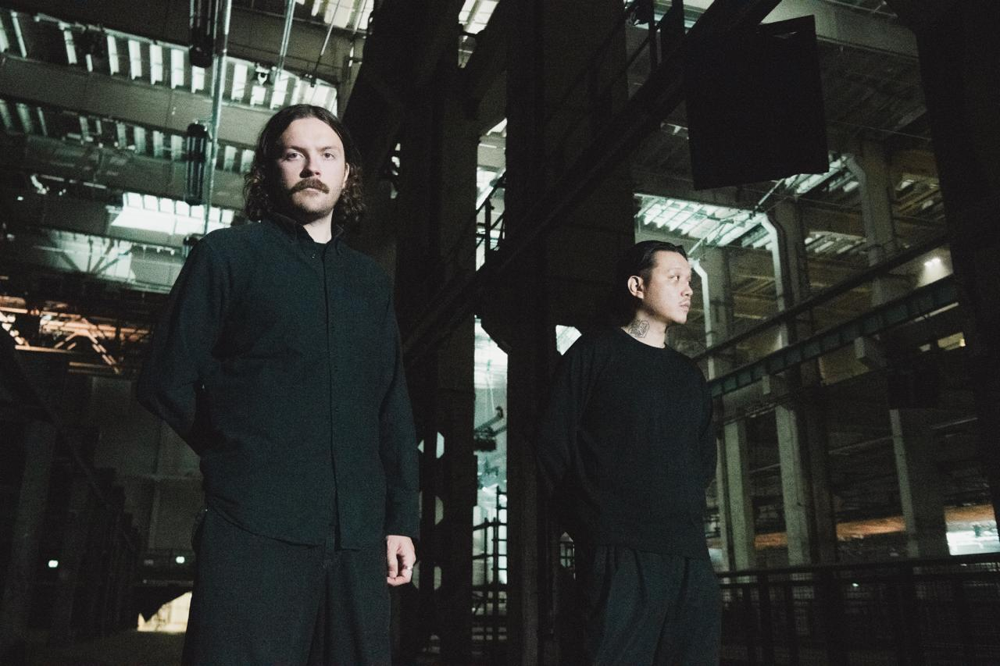
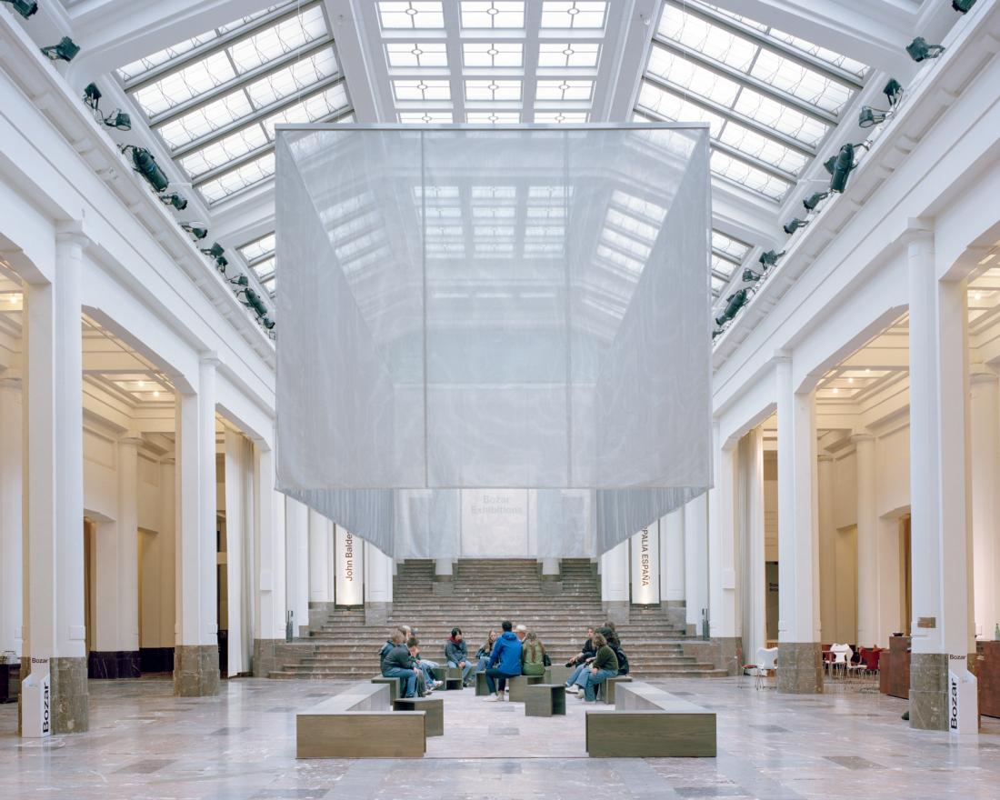
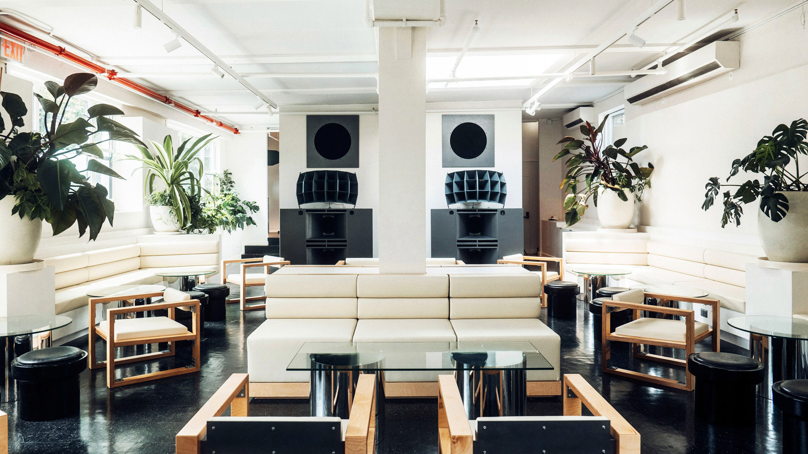
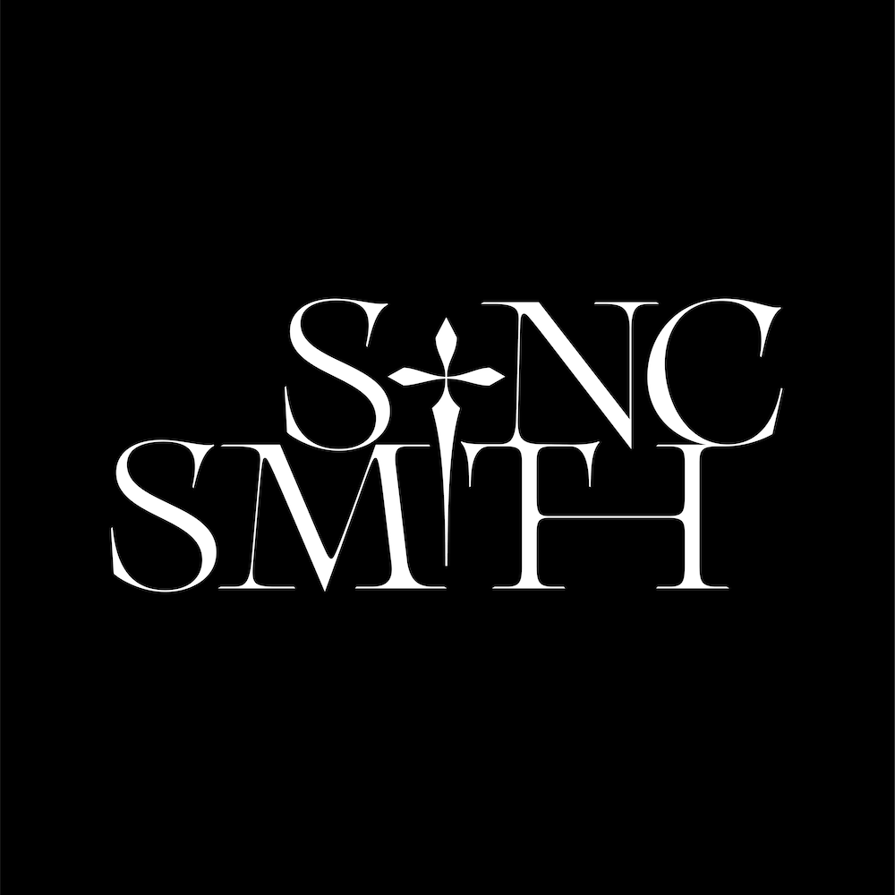
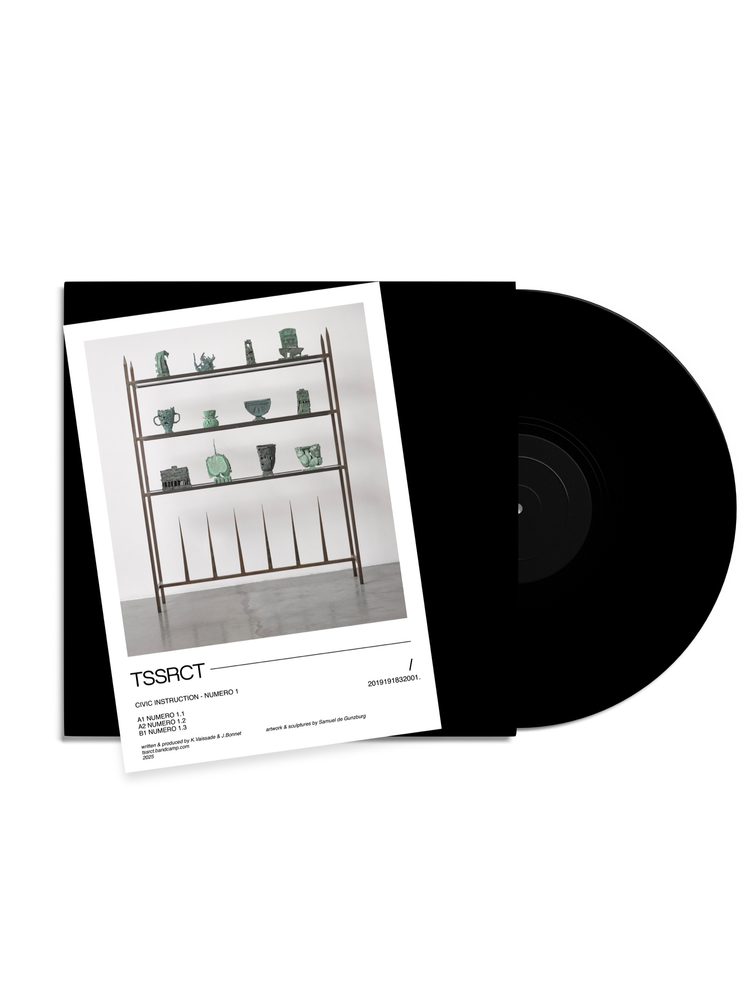

Drop your details. We'll reply within 48 hours.
A multidisciplinary platform pushing beyond techno. Music, visual art, fashion, design, technology.
TSSRCT draws inspiration from the tesseract, a real mathematical structure that remains inaccessible to human perception. A symbol of a reality that exists beyond what we can see.
More than a label, a multidisciplinary platform pushing beyond techno: music, visual art, fashion, design, technology. Its ambition is to build a global ecosystem for promotion and distribution, while developing increasingly ambitious events designed for a curated and discerning audience.
Backed by a decade in the industry, Hadone and UFO95 carry this vision with artistic legitimacy and the ability to scale.

Hadone × UFO95Strong and consistent output via Bandcamp, bridging club and experimental scenes.
International presence across key cultural hubs.
Credibility supported by leading figures in global techno and experimental scenes.
TSSRCT aims to expand its event and production branch beyond the traditional club format. Club showcases, concerts, and hybrid experiences in cultural institutions such as Bozar.
The goal: build a dedicated community through alternative listening experiences, from ambient sessions to multidisciplinary events, engaging both core and new audiences.
Within one to two years, TSSRCT aims to scale toward large-format events inspired by Reaktor, Wall of Sound by DVS1, and Photon by Ben Klock. Advanced sound systems, strong curation, immersive scenography for a refined rave experience.

Bozar
Public RecordsEvery TSSRCT release is a reusable asset. Sync for TV, film, advertising, fashion shows, games, platforms: a catalogue that compounds indefinitely with software-grade margins.
Direct bridge to luxury via Syncsmith. Active collaborations with Louis Vuitton, Prada, and the Perrotin orbit (Aaron Fowler, Samuel De Gunzburg, Romain Petrot, Massine Benoukaci · Perrotin Dubai).
Beyond existing placements, tailored compositions for designers, filmmakers, and artists. A high-end product that resells across territories and scales with the catalogue.

Editorial
CatalogueWe leverage a strong ecosystem across tech, gaming, and digital art. Through Digital AF, CHANOIR, and Wildcat, we access proprietary IP and innovative technologies that enhance user acquisition.
This allows us to move beyond traditional channels and create immersive entry points. The CHANOIR metaverse builds persistent environments for engagement, while the FUSE AR Quest Ticket turns event access into interactive experiences.
Together, these tools convert real-world audiences into engaged, long-term users.
In-house tools for composition, curation, and sound design exploration. AI as a studio extension, not a replacement.
Decoding client acquisition from cultural signals. Qualified targeting, editorial narrative, measurable performance.
Cross-pollination with the Digital AF ecosystem (Séoul). Web3 distribution, digital drops, decentralised audience research.
No other label combines artistic legitimacy, tech infrastructure, and knowledge marketing at this scale. That's the moat.
A pillar of the European techno scene, Hadone has been shaping a sharp sonic signature for over ten years, playing from Berlin's underground to international cultural institutions.
A prolific producer moving between techno, ambient, and experimental, UFO95 carries a demanding hybrid vision at the intersection of the dancefloor and attentive listening.
Co-build the tech layer: AI integration, Web3 rails, and the Chanoirs App. The product ecosystem around the label.
Strategic sponsoring of curated showcases. Direct line to a demanding audience at the intersection of fashion, art, and club culture.
Capital to scale the large-format event line à la Reaktor, Wall of Sound, and Photon. Advanced sound, immersive scenography, sharp curation.
Two engines, run in parallel or independently. Pick your horizon: patient capital on the label, or fast cash on events.